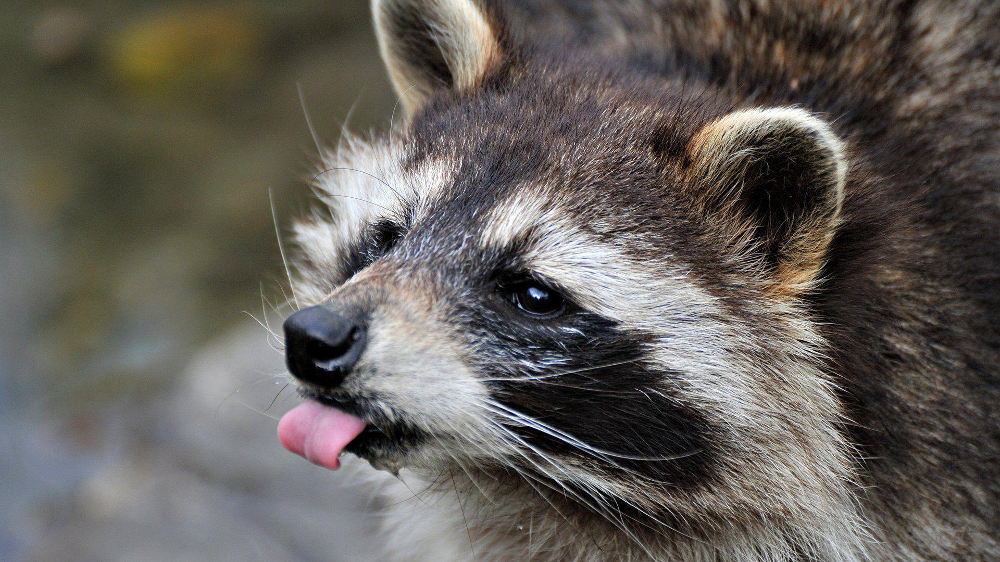
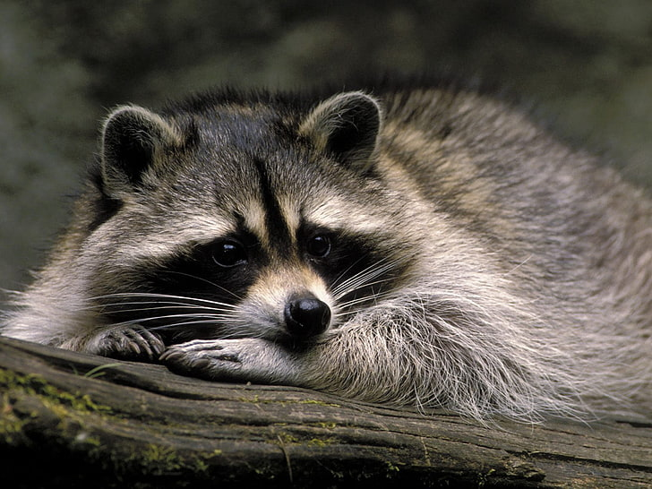
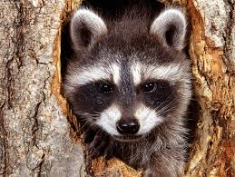
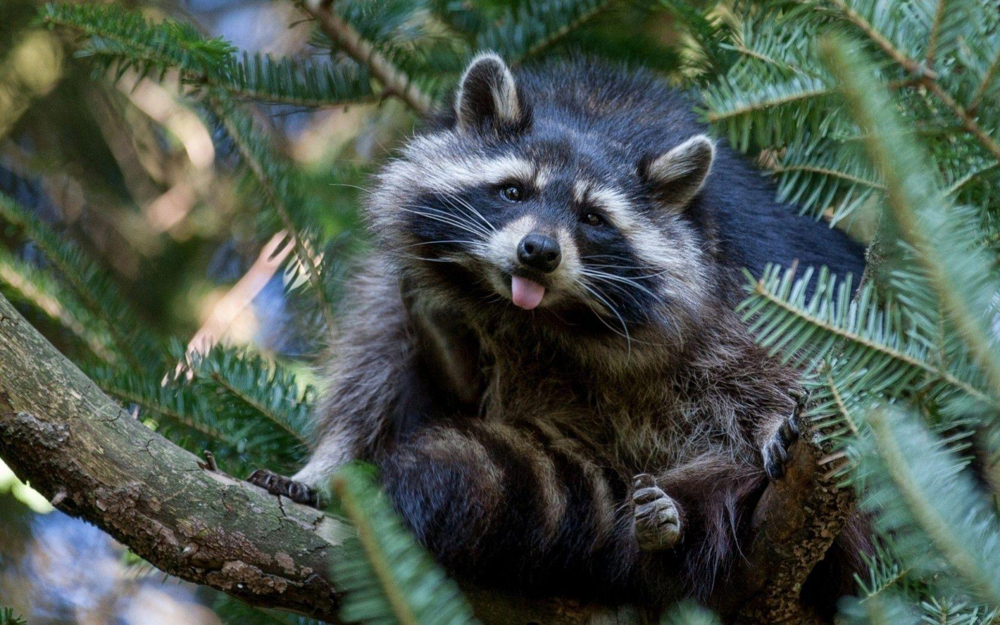

How to choose your Raccoon ?
Classic or Exotic ?
We offer to types of raccoons. The classic one which have white, gray and black colors. The exotic ones which have really fancy colors.
New or old ?
You can easily choose the age of your Raccoon, younger is bolder, older is wiser.
Pricing
Our raccoons don't have prices you must deserve them. They'll choose you if they like you.
Misty

Misty is some kind of crazy raccoon, she doesn't like to get pet and love to be in the nature. She only like to live in the wild and would be sad if she's living captive. You don't want to adopt her.
Rocky

Rocky is some kind of crazy raccoon, she doesn't like to get pet and love to be in the nature. She only like to live in the wild and would be sad if she's living captive. You don't want to adopt her.
Greedy

Greedy is some kind of crazy raccoon, she doesn't like to get pet and love to be in the nature. She only like to live in the wild and would be sad if she's living captive. You don't want to adopt her.
Toaddy

Misty is some kind of crazy raccoon, she doesn't like to get pet and love to be in the nature. She only like to live in the wild and would be sad if she's living captive. You don't want to adopt her.